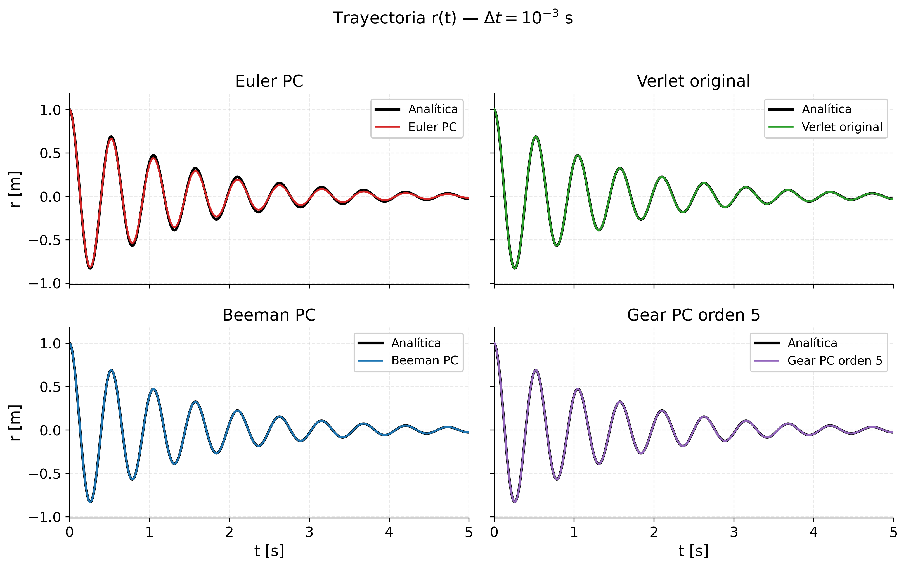

Trayectorias r(t) — numérica vs analítica ~30 s

Tenemos un oscilador amortiguado con solución analítica conocida, así que sirve para comparar integradores numéricos contra una verdad de referencia.
Probamos los cuatro del enunciado: Euler PC, Verlet original, Beeman PC y Gear orden 5. Acá, con un Δt razonable de 10⁻³ segundos, fíjense que Gear-5 y Beeman se superponen perfectamente con la analítica — no se distinguen. En cambio Euler y Verlet ya empiezan a desviarse, se ve a simple vista.